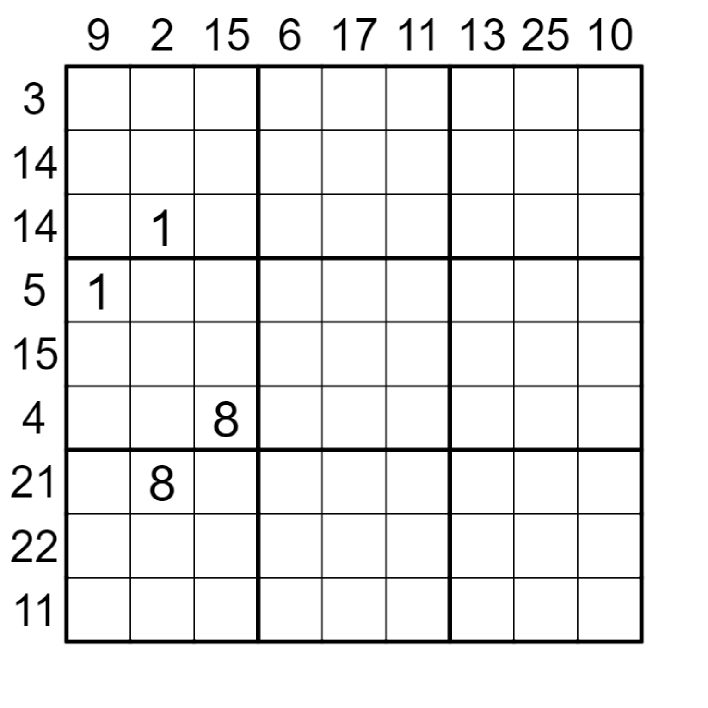

Your mystery solving missions lead you to modern day Greece. You are invited to investigate the sudden death of an aspiring mathematician.
When you reach his household, you are immediately overwhelmed by the sight of scratch papers everywhere on the floor and the musky smell of a room that
feels like it has not seen daylight for ages. Disturbed, you think to yourself,
“So these are mathematicians, such an eccentric breed…” But nonetheless, you still decide to search around for clues about this person’s death.
After hours of rummaging around,
you finally gather all the clues you have for further inspection.
Apparently, before this aspiring mathematician’s death,
he was in the middle of solving a
Sandwich Sudoku puzzle.

There are scratch papers on notes about theorems. It seemed like he was planning to submit a groundbreaking paper as well.
- I would like to use omicron to denote my new constant named after me.
- The epsilon definition is crucial in understanding limits and the fundamentals of calculus.
- Oops! I forgot to include delta in the definition in Note 2.
- I will use mu nought to denote the vacuum permeability in a classical vacuum.
- Delta indicates small change and if I make delta improvements then over time I believe that I will surpass Archimedes.
- Derivatives also depend on deltas.
- Alpha denotes the significance level when proving null and alternative hypotheses.
- Lambda constants are so overrated!
- I just realised mu is named as a measure in measure theory.
Lastly, he has a diary named Diagon Alleys
where he kept his thoughts. His most recent thoughts were obscured by his drool. You are barely able to make out the sentence.
_ _ _ _ _ _ _ _ _ DID A _ _ _ _ _ _ _ _ _ !
Can you figure out what is in the blank spaces?